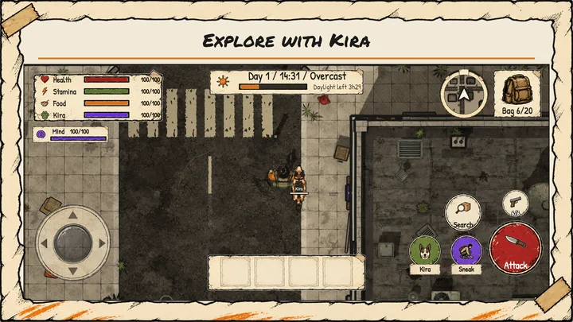
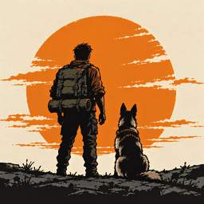
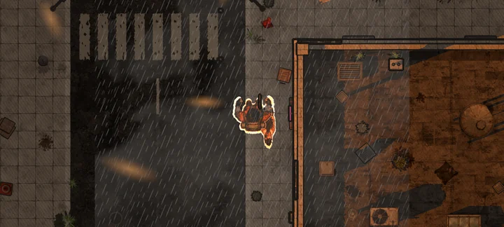
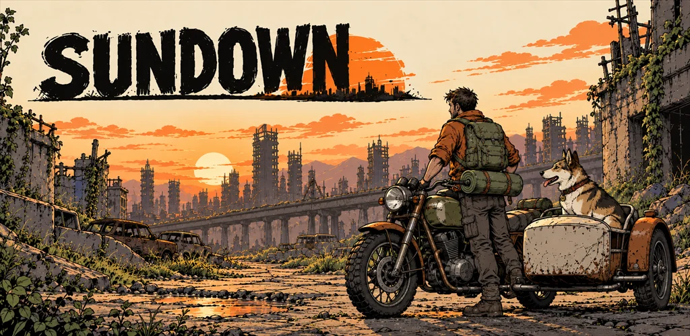
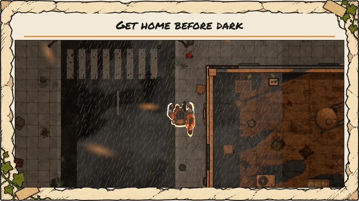
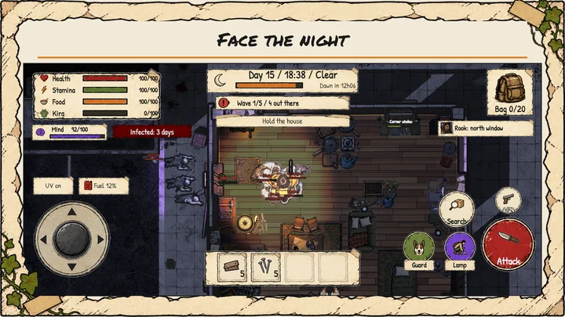
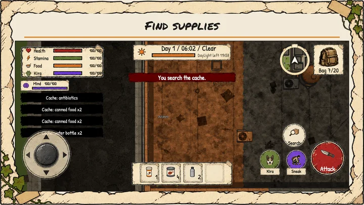
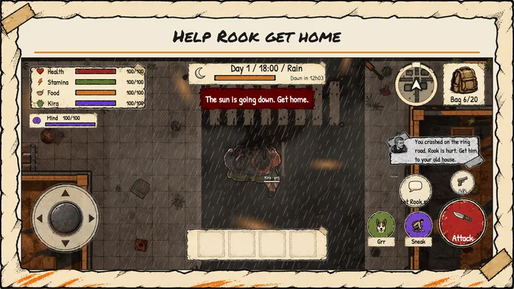
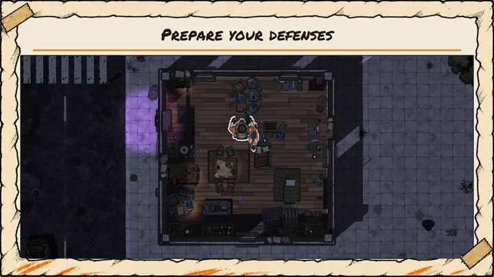

Out in the city
You and Kira.
Search a fallen city with your dog. Look for supplies and take on story missions while there’s still light.

Sundownby Oasis ForgeSundown · A survival game
Search a fallen city with your dog, get home before dark, and hold the house through the night.
Single-player · Play offline · Made for phones
Keep Kira close.
Keep an eye on the light.


A year after the fever
The city is overgrown and lawless. Your best friend Rook is hurt. Your partner Noor is missing. And Kira stays by your side.
Explore Midtown, search buildings for supplies, and help Rook at home. The infected hide from sunlight. Watch the daylight — dark rooms can hold more than supplies.
Make the daylight count
A top-down survival game
with a hand-inked comic look.

Out in the city
Search a fallen city with your dog. Look for supplies and take on story missions while there’s still light.

The daylight is running out
Every trip ends with the journey home. Get back before sundown and prepare your defenses.

On the other side of dusk
Some nights are quiet. Others bring an attack. Keep the house standing through the night.
From the game
Swipe, scroll, or use the arrow buttons to explore.



A single-player game with no Sundown account. Your progress and settings are kept on your device. Google Play Games supports cloud saves and achievements when signed in.
Crash reports and play stats are opt-in. Rewarded ads are optional, with no forced ads. Optional purchases are handled by Google Play.
Intended for ages 16 and up. Contains horror and blood.
A line back to the Forge
Questions about Sundown, feedback, or a problem with the game? Get in touch with Oasis Forge.